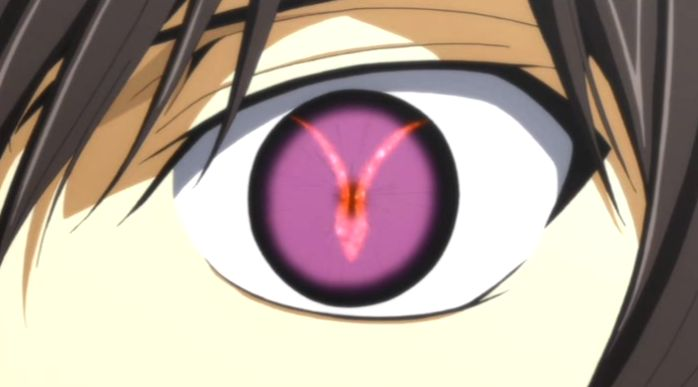
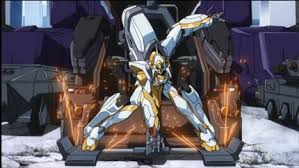
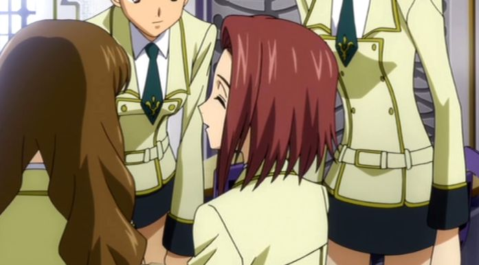

祝！！コードギアス 10周年プロジェクト始動
あの魔王ルルーシュが返ってくる・・・

第1話 魔神が生まれた日

日本はブリタニア帝国に敗北し、エリア11という名でブリタニア帝国に統治されていた。日本人はイレブンという名で呼ばれ、ブリタニア人から蔑まれていた。
ブリタニア人の学校「アッシュフォード学園」に通うルルーシュは、テロリストとブリタニア軍の戦いに巻き込まれてしまう。
戦いの中でルルーシュはブリタニア軍に所属する旧友の枢木スザクと再会する。
再会した二人の前にある一人の少女とブリタニア軍が現れる。スザクはルルーシュのことをかばい、銃で撃たれてしまう。
混乱するルルーシュは少女とその場を逃げ出すが、ブリタニア軍によって追い詰められてしまう。
そこで少女はルルーシュにある能力を授けた。
ルルーシュは手に入れた力でブリタニア軍人たちを自殺させる。
ルルーシュが手に入れた能力は絶対順守の命令を対象にかけることのできる能力。
第2話 覚醒の白き騎士

シンジュクゲットーに現れたテロリストの中に、アッシュフォード学園の生徒であるカレンの姿があった
カレンたちをブリタニア軍の包囲網から逃そうとするルルーシュ。
謎の少女から授かった能力を使ってブリタニア軍のナイトメアを奪い、カレンたちに指示を与えていく。
そこに、見慣れぬ嚮導兵器ランスロットが現れる。
他の機体と違い、戦闘能力の高いランスロット。搭乗しているのは、先の地下鉄構内で撃たれたスザクだった。
新宿での交戦は大明けには報道されていない＝ブリタニアがC.C.のことを隠そうとしている。
ルルーシュはカレン達テロリストを逃がそうとするのではなく、自分が逃げるために利用している。
ルルーシュの指揮によって、ブリタニア軍に壊滅的なダメージを負わせた→ピンチになったブリタニア軍が戦闘データのないランスロットを投入する。
ランスロットは機体性能が高すぎて、テロリスト達はなすすべなく倒されていく。
逃げのびたルルーシュは、ギアスを駆使し、ブリタニア軍を指揮するクロヴィス殿下のもとへ。
クロヴィスを殺害する際に、ルルーシュが第17皇位継承者ということが判明。ルルーシュは死んだこととされていた。
第3話 偽りのクラスメート

第三皇子クロヴィスのもとから、アッシュフォード学園に戻ったルルーシュ。
そこで、テロリストの一味であるカレンと対面する。
カレンはルルーシュを、先の戦闘で自分たちを指揮した声の主ではないかと疑う。
正体を知られてはいないかと探り合う二人。
ルルーシュはギアスの力を使って、カレンを欺くことに成功する。
その頃、クロヴィス皇子殺害の報道がなされる。
犯人として捕らえられたのは、枢木スザクだった。
その後普段の学園生活に戻るが、学園の生徒のカレンがテロリストだったのではないかと疑いをもつ。
ルルーシュはカレンがテロリストであるか？確認するとテロリストであることが判明。
しかしルルーシュはギアスを二度カレンに使おうとするが、二度目は通じず、カレンに疑われるはめに。(ギアスは二度同じ人間にかけることができないと判明。）
ルルーシュはギアスの効果を明確にするため、力の使い方を探る
これにより
- 力を発動すると、発動した相手を操ることができる。
- 相手の目を見ないといけない。
- 力が有効なのは1人1回限り
- 力を使われている間の記憶は相手に残らない。
ルルーシュは録音機とギアスを使いカレンを欺くことに成功した。
第4話 その名はゼロ

シンジュクゲットーで窮地から救ってくれた謎の男と再会を果たすカレン。
ゼロと名乗るその男の正体は、ルルーシュだった。
ゼロはカレンたち数名の力を借りて、クロヴィス皇子殺害容疑で軍事法廷に向かうスザクを救おうとする。
大勢のブリタニア人が見守る中、自らがクロヴィス皇子殺害の犯人であると名乗り出るゼロ。
謎の少女から与えられた力でスザクを解放させる。
だが、スザクはそれを拒み軍事法廷へ向かうと言う。
ルルーシュはスザクを助けるために、またもテロリストたちを利用する。
ルルーシュはテロリストの前では仮面をかぶり「ゼロ」と名乗ることにした。
ルルーシュはカレンと扇をつれて、正面からスザクを助けにいく。
ルルーシュはスザクの護送の指揮を担うジェルミアに「オレンジをばらすぞ」と脅しをかける。(オレンジとは特に何の意味も示さない言葉だが、この状況下では周りの人間はオレンジとは何だと疑心暗鬼になる)
ルルーシュはスザクの護送の指揮を担うジェルミアにギアスをかけた「私たちを全力で見逃せ」と。
ジェルミアは軍の指揮を乱し、全力でルルーシュ達を見逃した。
スザクを連れ戻したルルーシュはゼロのままスザクに仲間になれと告げる。
しかし、スザクはこれを拒否し、自らブリタニア軍のもとに戻ってしまう。